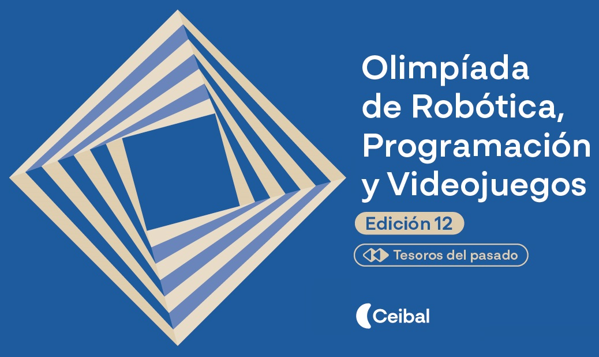
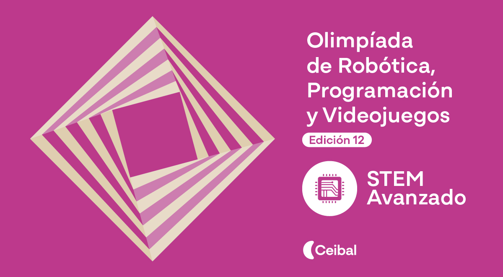

📰 Publicaciones recientes

Tecnología
Innovación en la educación técnica
El uso de tecnologías digitales promueve el pensamiento crítico y la resolución de problemas en los estudiantes de las carreras técnicas.
Leer artículo

Eventos
Taller de Robótica Educativa
Alumnos del INET participan de un taller avanzado con enfoque STEM, integrando programación, electrónica y diseño 3D.
Leer artículoDestacado del mes
Se inauguró el nuevo laboratorio de innovación tecnológica con equipamiento de última generación, elevando la calidad educativa.
Ver detalles